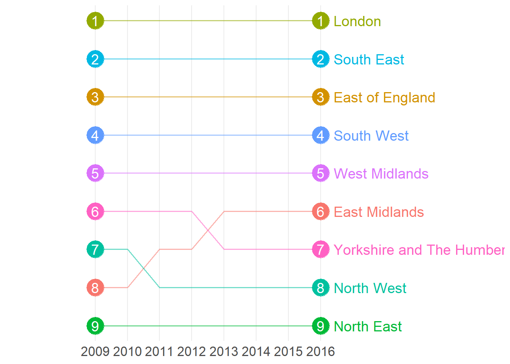

7 Answer
I will reaslse the answer in 5 mins.
Below is the answer of challenge 1:
ggplot(data=housedata2, aes(x= yearchi, y=priceper,group=region,color=region)) +geom_point(size=2)+
geom_line(size = 1)+
scale_colour_hue(breaks=c( "London" ,"South East" ,"East of England" ,"South West","West Midlands","Yorkshire and The Humber","East Midlands","North West","North East") )+
theme_bw()+
theme(axis.title = element_text(size=15), axis.text = element_text(size=13),strip.text = element_text(size=15),legend.text = element_text(size=11),legend.title = element_text(size=15))+
ylab(bquote("House price ( £/"~m^2 ~ ")"))+xlab("Year")+
guides(color=guide_legend("Region")) +
scale_y_continuous(labels = scales::comma,)+scale_x_continuous(breaks = c(2009,2010,2011,2012,2013,2014,2015,2016))
You also can change the legend label text by setting the labels in scale_colour_hue.
ggplot(data=housedata2, aes(x= yearchi, y=priceper,group=region,color=region)) +geom_point(size=1.8)+
geom_line(size = 0.8)+
scale_colour_hue(breaks=c( "London" ,"South East" ,"East of England" ,"South West","West Midlands","Yorkshire and The Humber","East Midlands","North West","North East"),labels=c("LD","SE","EE","SW","WM","YH","EM","NW","NE") )+
theme_bw()+
theme(axis.title = element_text(size=15), axis.text = element_text(size=13),strip.text = element_text(size=15),legend.text = element_text(size=11),legend.title = element_text(size=15))+
ylab(bquote("House price ( £/"~m^2 ~ ")"))+xlab("Year")+
guides(color=guide_legend("Region")) +
scale_y_continuous(labels = scales::comma,)+scale_x_continuous(breaks = c(2009,2010,2011,2012,2013,2014,2015,2016))
Below is the answer of challenge 2:
ggplot(data=result1,aes(x=yearchi, y=ranknew,group=region,color=region))+
geom_line(aes(color = region, alpha = 1), size = 0.7) +
geom_point(data = result1[(result1$yearchi == "2009"|result1$yearchi == "2016"),],
aes(x=yearchi, y=ranknew,group=region,color = region),
size = 8)+
geom_text(data = result1[result1$yearchi == "2016",],
aes(label = region) ,
position = position_nudge(x = 0.4),
hjust = 0,
size = 5) +
geom_label(data = result1[(result1$yearchi == "2009"|result1$yearchi == "2016"),],
aes(label = ranknew),
color="white",
alpha = 0,
size = 5,
label.padding = unit(0.00, "lines"),
label.size = 0.0)+
theme_bw()+ scale_x_continuous(limits = c(2007, 2018),breaks = c(2009,2010,2011,2012,2013,2014,2015,2016))+
scale_y_reverse( breaks = unique(result1$ranknew))+
theme(legend.position = "none",axis.text = element_text(size=13))+
theme(axis.line=element_blank(),
axis.text.y=element_blank(),
axis.ticks=element_blank(),
axis.title.x=element_blank(),
axis.title.y=element_blank(),
legend.position="none",
panel.background=element_blank(),
panel.border=element_blank(),
panel.grid.major.y = element_blank(),
panel.grid.minor.x=element_blank(),
panel.grid.minor.y=element_blank(),
plot.background=element_blank())+
scale_colour_manual(values=c("#238443", "#252525","#252525", "#252525","#d95f0e", "#252525","#252525", "#252525","#d95f0e"))